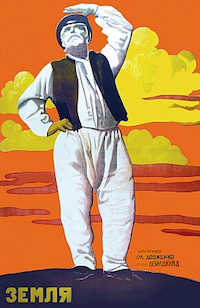
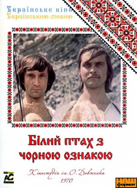
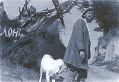
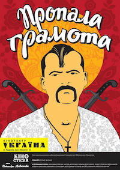
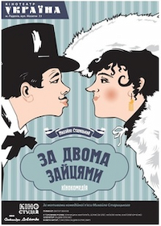

films that every Ukrainian should watch
Земля
-
Жанр
Драма -
Режисер
Олександр Довженко -
У головних ролях
Семен Свашенко Степан Шкурат Юлія Солнцева Олена Максимова Микола Надемський Петро Масоха
Фільм відкривається краєвидами полів і поглядом на достиглий врожай українського села. Старий хлібороб Семен Трубенко чекає в яблуневому саду своєї смерті. В оточенні своєї родини, включаючи сина Опанаса і друга Петра, він упевнений, що прожив гідне життя. Петро просить, щоб той після смерті дав знак, куди він потрапить: у рай чи в пекло. Він каже, що дав би Семену орден. Старий просить дати йому яблуко та милується дітьми, а потім тихо помирає.
Згодом відбуваються збори селян, на яких оголошують список куркулів — заможних селян, яких звинувачують у привласненні спільного надбання. Комсомолець Василь, онук Семена і син Опанаса, виступає проти батька. Він не засуджує його, але каже, що той постарів і не розуміє переваг колективізації. Проте порозуміння недовге, адже скоро в село привезуть трактори, якими Василь обіцяє скористатися проти куркулів.
Хлібороб Архип, збентежений змінами, відвідує могилу Семена, допитується в померлого як йому на тому світі, але відповіді так і не отримує. Василь приїжджає з першим трактором, подивитися на нього збігаються майже всі селяни. Але трактор скоро зупиняється — в радіаторі скінчилась вода. Голова колгоспу замовчує це, доповідає телефоном керівництву, що все гаразд. Архип, який оре землю волами, зверхнього спостерігає за селянами, чия робота зупинилась. Ті, однак, знаходять несподіване рішення — мочаться в бак радіатора. Василь, як і обіцяв, переорює трактором межу колгоспної та куркульської землі. Колгоспники спільно збирають урожай і випікають хліб. Куркуль Хома, що вже радів з невдачі, замислюється про розправу над Василем. Увечері Василь, танцюючи, йде дорогою. Темна постать стріляє в нього.
Василь помирає, його оточують рідні, як колись його діда Семена. Його сестра божеволіє через втрату. Опанас вирушає помститися за сина й допитується в куркулів, хто вбивця. Головний підозрюваний — Хома, але він не зізнається. Опанаса відвідує священник, аби відспівати Василя. Опанас каже йому, що Бога нема, та просить синових друзів влаштувати похорон «без попів і без дяків» і «співати нові пісні для нового життя». Селяни несуть труну з Василем повз яблуневий сад, виконуючи прохання про спів. Священник даремно просить у Бога покарати їх і знищити колгоспи. Збожеволіла Василева сестра зриває з себе одяг і бігає по спорожнілій хаті, кличучи брата. Наречена Василя, Наталя, тим часом народжує. На кладовищі один із комсомольців виголошує палку промову про сміливість Василя. Над селом саме пролітає аероплан, з яким комсомолець порівнює Василеву славу. Хома прибігає і зізнається, що він убивця. Проте натовп не чує й не помічає його. На поля та сади проливається рясний дощ.
Білий птах з чорною ознакою
-
Жанр
Драма -
Режисер
Юрій Іллєнко -
У головних ролях
Лариса Кадочникова Іван Миколайчук Богдан Ступка
Події фільму відбуваються з 1937 по 1947 рік на Буковині, нині Чернівецька область Західної України, в українському селищі на річці Черемош, прикордонному з Румунією. У цьому селі живе сім'я Леся Дзвонаря (Олександр Плотников): Лесь, його дружина Катерина (Наталія Наум), перший син Петро (Іван Миколайчук), другий син Орест (Богдан Ступка), третій син Георгій (Михайло Іллєнко) та четвертий Богдан (Юрій Миколайчук). Голод 30-х років і румунізація населення привели до повсюдного зубожіння населення. Щоб вижити, Дзвонар вирішує продати синів у батраки. Старшого з них, Петра, заарештовують на ярмарку румунські солдати; молодшого, Георгія, бере в працівники місцевий священик, отець Мирон; решта розходяться по багатих господарствах, займаються сільськогосподарськими роботами, валять ліс.
У священика зростає дочка-красуня Дана (Лариса Кадочникова), в яку закохані троє старших братів. Вона не може вибрати когось одного, що спричиняє сварку братів. Ця любов буде відігравати велику роль у житті кожного із синів Дзвонаря, але щастя любові не отримає ніхто. У 1940 році територія переходить до СРСР, солдати прибирають прикордонний стовп. Дана виходить заміж за солдата радянської армії — тракториста Остапа (Леонід Бакштаєв). Початок війни розділяє братів, вони опиняються по різні боки барикад: Петро служить у Червоній Армії, а Орест прилучився до УПА-ОУН(б). Георгій залишився осторонь. Він закохується в місцеву чаклунку, яку незабаром вбиває румунський офіцер. Георгій біжить шукати правду, іде на війну. Кінець війни, у село повертається Петро Дзвонар. Повертається до дружини Дани тракторист, але вона його не приймає. Петро не знає, як сказати матері, що батька вбили, не наважується входити до будинку. Зустрівши тракториста, кличе його жити до свого дому. Орест продовжує партизанити в лісах. Прийшовши уночі додому до матері, застає тракториста, якого пізніше прив'язують до трактора з наміром спалити живцем. Петро намагається врятувати його, але трактор вибухає й обидва гинуть. Повернувся додому Георгій. Контузія позбавила його голосу. Орест сходиться з Даною, вони живуть у лісі. Але вона йде від нього, оскільки втомилася від лісового життя, і повертається до батька. Орест також утомився ховатися в горах, тому одного разу він виходить на свято в село. Його, самотнього й озброєного, люди цураються. Не звертаючи ні на кого уваги, Орест шукає в натовпі Дану, танцює з нею. Виходить і Георгій, звинувачуючи його у вбивстві Петра. Орест біжить, селяни женуть його в гори. Георгій вбиває Ореста. Настають мирні дні. Георгій став лікарем, повернувся в село. Він ставить згорілий трактор пам'ятником, лікує людей. Життя триває.
Вавілон ХХ
-
Жанр
Поетична притча -
Режисер
Іван Миколайчук -
У головних ролях
Іван Миколайчук Любов Поліщук Таїсія Литвиненко Борислав Брондуков Костянтин Степанков >
До села Вавилон приходить колишній моряк Синиця, щоб організувати комуну. Він бачить, що після повалення царизму село майже не змінилося, там навіть стоять гротескні скульптури царя, цариці і їхнього сина. Синиця підриває скульптури гранатами.
Місцевий трунар і філософ Фабіан слідом повертається до Вавилона, роздумуючи про те, що головне не пройти шлях, а багато що на ньому побачити. Брати Данько і Лук'ян задумуються оженитися, але мусять доглядати за старою матір'ю. Вони наймають сироту Даринку для допомоги по господарству. Незабаром Даринка стає свідком того, як багатий Бубела, побоюючись, що більшовики відберуть його майно, збирає зброю, аби вбити Клима Синицю. Вона розповідає про це братам.
Данько залицяється до Мальви, підбурюючи її покинути свого хворого чоловіка Андріяна. Незабаром Андріян помирає, але Мальві подобається Фабіан. Проте він не хоче стосунків, побоюючись втратити розум. Мальва приходить до Синиці в колишній панський маєток, аби вступити в комуну, та Синиця не хоче її приймати, вважаючи Мальву ненадійною. Комунар відправляє її назад в супроводі поета Яворського, хоча Мальва твердо вирішує бути в комуні. Побачивши її в компанії поета, Данько ревнує та замислює помсту.
Невдовзі мати Данька і Лук'яна помирає, але виявляється, у неї був скарб, закопаний під грушею. Селяни покидають жнива, щоб поховати небіжчицю, а Фабіан копає могилу. Після похорону брати беруться шукати скарб та викопують скриню з козацькою зброєю, але не усвідомлюють її цінності. Мальва продовжує зустрічатися з Яворським, та його вислідковують куркулі на чолі з Бубелою і застрелюють. Однак Мальва вже вагітна від нього.
Бубела приходить до Фабіана й замовляє про всяк випадок труну для себе. Вночі на Водохреще він з іншими куркулями приходить до комунарів та схоплює їх. Данько стає на бік куркулів, тоді як Лук'ян приєднується до комунарів. Бубела підмовляє селян на бунт, Фабіан же намагається завадити кровопролиттю. Попри його слова, починається бійка і куркулі тікають. Користуючись нагодою, Данько стріляє в Мальву, але влучає у Фабіана.
Пропала грамота
-
Жанр
Комедія -
Режисер
Іван Драч -
У головних ролях
Іван Миколайчук Федір Стригун Лідія Вакула Земфіра Цахілова Михайло Голубович Володимир Глухий Василь Симчич Анатолій Барчук >
Старий дяк просить молодь розіграти історію про його діда — славетного козака. Подальші події розгортаються як своєрідна уявна вистава. Після бою з бусурманами козак Василь повертається додому в Диканьку. Та відпочинок переривають двоє посланців, що приносять новину від писаря, але замість того, щоб розповісти її, намагаються згадати, яке в писаря прізвище. Врешті вони повідомляють про грамоту від гетьмана. Її слід якнайшвидше доставити російській цариці, інакше на Василя нібито чекає страта, а за документом полює сам диявол. Василь просить жінку зашити грамоту в шапку і збирається в дорогу. Батько, благословивши його, радить знайти товариша і дає зачарований тютюн. Сусіди просять у Василя про різні послуги від цариці. Сільський староста, чийого брата-зрадника Василь убив, наймає Куця — чорта в людській подобі, щоб той помстився.
Дорогою Василь натрапляє на Куця, в якого, не підозрюючи, хто це, питає дорогу до Петербурга. Той вказує хибний шлях, але скоро козака наздоганяють посланці, що згадали прізвище. Василь зустрічає запорожця Андрія, з яким їде далі в правильному напрямку. Вони натрапляють на село, що потерпає через реєстрових козаків, які відібрали в селян коней для перепелиних ловів. Старий Остап дорікає, що не лишилося запорозьких козаків, аби захистити селян. Василь з Андрієм удвох виступають проти реєстрових козаків і пана, що головує над ними. Тоді виявляється, що всі козаки знайомі з Василем і відмовляються битися з ним, бо той колись визволив їх з полону. Куць, розчулений цим, вирішує допомогти Василеві та скидає пана в річку. Василь стинає йому оселедця й наказує повернути селянам відібраних коней.
Василь з Андрієм зупиняються в корчмі, біля якої бачать відьму Одарку, від якої диявол просить на 10 років стати його дружиною в обмін на будь-які послуги. Одарка вимагає, аби це сталося при свідках, і чорт кличе козаків. Причарований відьмою, Василь втрачає шапку та падає з Андрієм в озеро й потрапляє на той світ. Там нечиста сила та відьми веселяться й знущаються з душ грішників. Василь розуміє, що це все сон, проте не може прокинутися, не з'ясувавши, де грамота. Він вимагає повернути шапку і визволити душі всіх людей, відьма погоджується, але за умови, що Василь виграє в неї в дурня. Козак двічі програє, тоді Куць підказує плюнути в карти[7]. Тепер Василь обігрує відьму і отямлюється в корчмі з перепою, а вся пригода з відьмою виявляється маренням. Та виявляється, шапку украв корчмар. Справжня Одарка розповідає, що її матір забрали в полон турки, а її саму продали корчмареві. Василь б'є корчмаря і той повертає шапку й відпускає Одарку. Андрій обіцяє взяти дівчину за дружину та визволити її матір.
Козаки дістаються до Петербурга та приходять на прийом до цариці. Потьомкін, в якому Василь підозрює диявола, запевняє її, що грамота не має цінності, тим часом аудієнція закінчується і козаків проганяють. Василь дає Потьомкіну ляпаса, і той виявляється картиною, а цариця — баронесою, котра нічого не знає про грамоту. Розчаровані цим обманом нечистої сили, козаки йдуть геть та вирішують застрелитись. Їх зупиняє камінь, що виявляється Куцем, покараним дияволом за допомогу. Він просить кинути його в болото, щоб повернути людський вигляд. Після цього Куць тікає, а козаки відмовляються стрілятися, згадавши про односельчан, які лишаться беззахисні. Василь і Андрій повертаються в Диканьку та вигадують, як їх прийняла цариця та як дослухалася до всіх прохань. Василь зустрічає хлопчика, що хоче бути козаком, і дарує йому коня. Наприкінці вистави дяк каже хлопцеві, котрий грав Василя, що той набрехав ще більше за його діда.
За двома зайцями
-
Жанр
Комедія -
Режисер
Віктор Іванов -
У головних ролях
Криницина Маргарита Василівна Борисов Олег Іванович Наталія Наум
Дія відбувається в Києві царських часів. Свирид Петрович Голохвостий — модник та гульвіса, що працює в цирульні (перукарні), а зароблені гроші програє в азартні ігри. Одного разу до Голохвостого приходить поважний чиновник і повідомляє, що його цирюльня опечатана за борги, а все майно конфіксується. Голохвостий вирушає просити грошей у знайомого лихваря, але той, вже знаючи його ненадійність, відмовляє. Та Голохвостий дізнається, що родина Сірків видає свою дочку Проню заміж, і вирішує одружитися з нею, щоб розбагатіти. Проня груба та негарна, зате її батько Прокіп дає десять тисяч рублів посагу.
Гуляючи зі своїм другом на Володимирській гірці, Голохвостий бачить гарну дівчину Галю та закохується в неї. Друзям він хвалиться, що одружиться з Пронею задля грошей, а Галя буде його коханкою. Якось увечері, після побачення з Пронею, Голохвостий зустрічає Галю та починає залицятися до неї. Тоді його помічає мати Галі, Секлета, і змушує поклястися перед церквою, що він одружиться з Галею, хоча дівчина кохає простого робітника Степана.
Наступного дня Голохвостий вирушає в гості до Сірків і отримує благословення на шлюб із Пронею. Батьки Проні вихваляються своїм багатством, тоді як Голохвостий вдає з себе дуже вченого чоловіка. Повертаючись від нареченої, занурений у мрії про розкішне життя, він випадково стикається з Секлетою. Вона силоміць везе Голохвостого на свої іменини. Секлета повідомляє гостям, що Галя зі Свиридом тепер заручені. Галя тікає прямо з заручин до свого коханого Степана і просить у нього захисту, той заспокоює її.
Коли настає день весілля, подруги Секлети, які були присутні на заручинах Свирида з Галею, випадково дізнаються, що він готується одружитися з Пронею. Вони розповідають про це Секлеті, вона поспішає в церкву, де відбудеться вінчання. Секлета вривається на церемонію та оголошує присутнім, що Голохвостий побрався з її донькою, а шлюб із Пронею був лише задля посагу. Голохвостий виправдовується, що це все наклеп, але йому не вірять і проганяють. Секлета вимагає аби було зіграно весіння з Галею, та її спиняє лихвар, який розповідає, що Голохвостий банкрут. Голохвостий визнає, що він шахрай, і йде геть зі своїми товаришами. Степан та його друзі хапають Голохвостого й викидають із церкви.